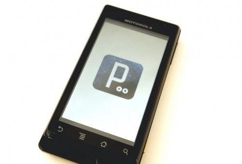
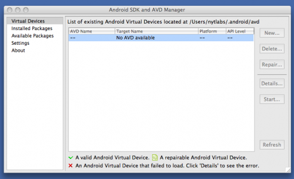
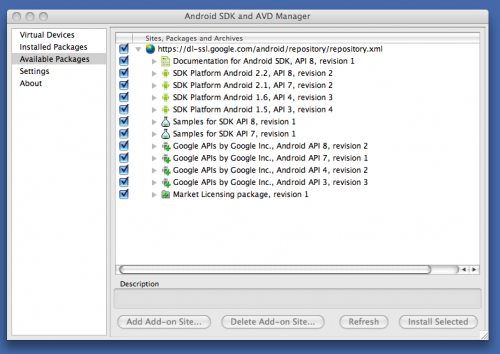
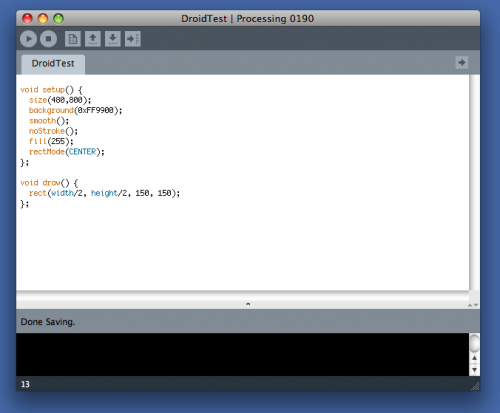
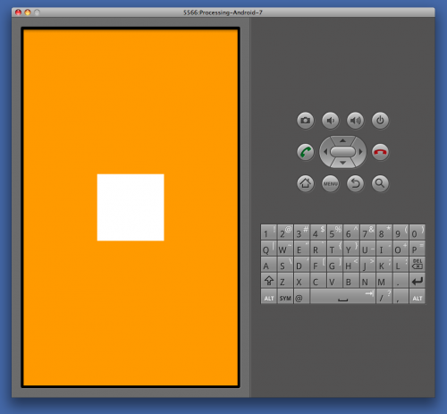
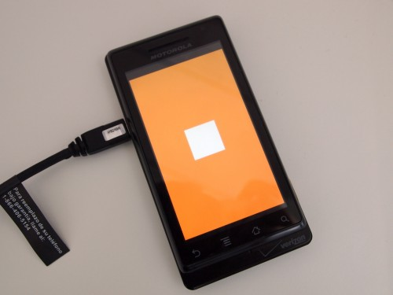
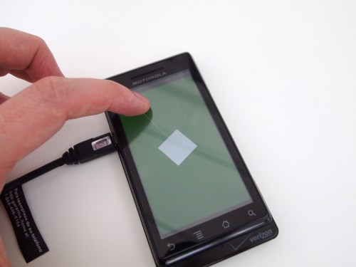

|
This tutorial is for Processing version 2.0+. If you see any errors or have comments, please let us know. This tutorial is adapted from 'Processing & Android: Mobile App Development Made (Very) Easy' by Jer Thorp  You can now use Processing to quickly create apps for mobile devices that use the Android operating system. Let’s get a from-scratch Android app working on a device (Following this tutorial mostly involves installing software). ** You don’t need to have an Android device to do this tutorial, since we can see the app that we’ll build in a software emulator. But it’s much cooler if it’s on a device. ** Before you start on this tutorial, I’d recommend that you make sure you have a recent version of Java installed. Mac users can run Software Update – Windows folks should go here and download the latest Java version. Step One: Install the Android SDKI promise. This isn’t going to be one of those tutorials that is full of three-letter acronyms that you don’t understand. But before we get started building our app in Processing, we need to download some software that will allow us to author Android applications (Processing manages all of the tricky bits of this, and will eventually download and install the SDK for you as well – for now we have to do a tiny bit of manual labour). This bundle of software is called a ‘Software Development Kit’ and is fairly easy to get and install. First, go to the URL below, and download the appropriate SDK for your operating system: http://developer.android.com/sdk This download should un-zip to a folder called something like ‘android-sdk-mac_x86′. Move that folder to a safe location on your machine , and then open the ‘tools’ directory inside of it. Double-click on the file named ‘android’ – on a Mac this will fire up Terminal and in turn will open the Android SDK and AVD manager, which looks something like this:  We’re going to use the manager to install the Android packages that we need to build our apps. Click on the left menu option ‘Available Packages’ and check the box that appears in the centre window. The manager will check with the Android repository and then list all of the packages and tools that are available for download:  We can install all of the packages – that way we know we’ll get everything we need. Click ‘Install Selected’. In the next window, click ‘Accept All’, and then ‘Install’. That’s it! We now have the Android SDK files that we need to work with Processing Android. Now we need to download the latest and greatest version of Processing. Step Two: Make an Android AppBefore we do anything even somewhat complicated, let’s take the time to learn how Processing Android works. Let’s start with a really simple sketch, which draws a white square in the middle of an orange field:
void setup() {
size(480,800);
noStroke();
fill(255);
rectMode(CENTER); // This sets all rectangles to draw from the center point
}
void draw() {
background(#FF9900);
rect(width/2, height/2, 150, 150);
}
 If we press the run button (or hit Apple-R), Processing compiles our sketch to run as a temporary Java applet, which we see running in a separate window (go ahead and try this). This is the basic Processing behaviour. I have a few other options for compiling my little sketch. I could select ‘Sketch > Present’ from the menubar to present the sketch in fullscreen, I could select ‘File > Export’ to compile my sketch as a Java applet to display in the browser, or I could select ‘File > Export Application’ to produce a stand-alone file to launch like a ‘real’ application. These three basic options for compiling (run, present, export) have slightly different functions in Android Mode. Wait. What? Android Mode? Here we discover the genius of our new, super Processing – we can build sketches the same way that we are normally used to, then switch into Android Mode to preview and publish our droidified sketches. Let’s do that with our simple rectangle sketch. From the shiny new ‘Android’ menubar heading, select Android mode. Let’s first see what the sketch looks like in the emulator, by pressing the run button:  * The first time you try this you might get an error message telling you that the Android SDK hasn’t been installed. Press ‘yes’ and locate the Android SDK folder that you downloaded in Step One. Then run the sketch again.
** Be patient! The emulator can take a while to get started. You might have to run the sketch again one the desktop appears in the emulator. Exciting, right? Right? OK. Maybe not. It’s just a white square. But… let’s make it a white square on an Android Device!! Step Three: Running the App on a DeviceVery Important: To get the app running on your device, you’ll first have to make sure that USB debugging is turned on. You can do this from the Settings>Applications>development menu on your device. If you’re on Windows, you might have to do some other setup, too. Connect your Android device, and then select ‘Sketch>Present’ from the menubar (or, press Shit-Apple-R).  Yahoo! Now that we know that everything is working, let’s add a little bit of interactivity. We’ll make the box rotate as we slide our finger left to right, and make the background color change as we move our finger up and down. We’ll also add a little ball-and-stick indicator to show where the ‘mouse’ is:
/*
World's simplest Android App!
blprnt@blprnt.com
Sept 25, 2010
*/
// Build a container to hold the current rotation of the box
float boxRotation = 0;
void setup() {
// Set the size of the screen (this is not really necessary
// in Android mode, but we'll do it anyway)
size(480,800);
// Turn on smoothing to make everything pretty.
smooth();
// Set the fill and stroke color for the box and circle
fill(255);
stroke(255);
// Tell the rectangles to draw from the center point (the default is the TL corner)
rectMode(CENTER);
}
void draw() {
// Set the background color, which gets more red as we move our finger down the screen.
background(mouseY * (255.0/800), 100, 0);
// Change our box rotation depending on how our finger has moved right-to-left
boxRotation += (float) (pmouseX - mouseX)/100;
// Draw the ball-and-stick
line(width/2, height/2, mouseX, mouseY);
ellipse(mouseX, mouseY, 40, 40);
// Draw the box
pushMatrix();
translate(width/2, height/2);
rotate(boxRotation);
rect(0,0, 150, 150);
popMatrix();
}
Again, we can use Present (Shift-Apple-R) to run the sketch on our device:  Some helpful tips when you’re working with Processing & Android: - I know I’ve said this before, but be patient. Canceling a process (ie. the emulator load or a device compile) can cause problems. If you do this inadvertently, you’re best off restarting Processing. - Make sure to check out the Processing Android Wiki, where you’ll find some troubleshooting advice, and some tips on how to get your sketches working properly on your device. This tutorial is for Processing version 2.0+. If you see any errors or have comments, please let us know. This tutorial is adapted from 'Processing & Android: Mobile App Development Made (Very) Easy' by Jer Thorp |